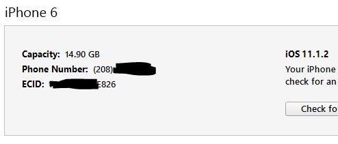
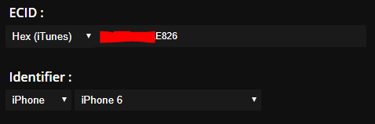
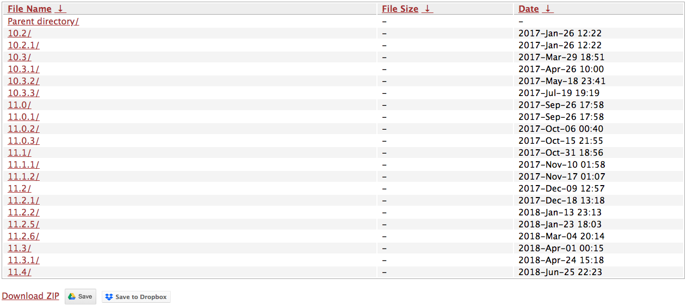

Saving blobs
Author: MPG13
Having blobs saved is a requirement to the downgrade process.
To preface: blobs are the response signature from Apple telling your device that a restore is valid. Certain tools allow you to save that response so it may be used at a later time. There are infinite use files, meaning that you can restore with the same blob several times.
Let's save some blobs!
One of the most common and highest recommended tools is TSSSaver by 1Conan. It backs your blobs up to its own servers, and allows you to easily import them to Dropbox and Google Drive, as well as downloading them in a ZIP archive.
There are others of course, so we'll talk about those as well, for the sake of options. But first, let's find your ECID
Method one: iTunes
- Plug your device into your computer and open iTunes. On the device summary page, click where it says "serial number" until it says ECID. 
- Right click on the string of numbers and letters, and copy it.
Method two: System Info
- Download the tweak "System Info" by author "ARX8x" from the BigBoss repo in Cydia
- Once installed, launch Setting, and navigate to
Settings>General>Aboutand find the ECID cell - Tap and hold on the cell to copy your ECID
- Go to tsssaver.1conan.com
- Scroll toward the bottom, and find the cell that looks like the image below 
- Enter the appropriate information about your device, like in the image above
- Verify the CAPTCHA, then hit the submit button.
- You will be brought to a page with a list of all of your bobs saved, and download buttons along the bottom 
- It is highly recommended that you save the blobs to several locations. Cloud storage, flash drives, computers, etc. They will be stored on 1conan's server indefinitely but it is good to have a backup should something happen.
Note: If you used an alternative method to get your ECID, yours may not be in hex format, and you would have to choose decimal from the dropdown on the left of the text field. If your ECID has a combination of letters and numbers, it is in hex format. If it has only numbers, it is in decimal format.